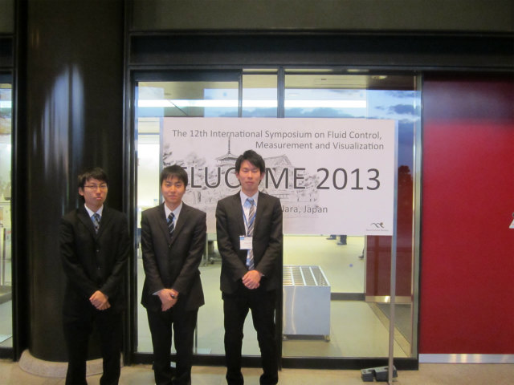

| ・FLUCOME 2013-2 ＠奈良(H25.11.18-23) | |||
|
K井くんは"Influence of Particle Diameter on Detection Accuracy in Two-wavelength Reconstruction Digital Holography"、最後にN島くんは"PTV Measurement for Deflection FieldofaCentrifugal PumpBlade"、訂正"PTV Measurement for Deflection Field of a Centrifugal Pump Blade"を発表しました。村田先生も助教の人も居ないので、質疑応答は自力でなんとかしました（助教の人は居てもフォローはしない、ムー君談）。 |
|||
|
助教は授業で帰ったし学生だけでガンバル |
K井、座長に自己紹介中 | ||
|
K井くん発表中 |
質疑応答中 | ||
|
task発表前 |
発表中 | ||
|

3人とも発表終了！ |
次の日早朝、南大門！ | ||
|
大仏様式 |
力強い構造 | ||
|
金剛力士（吽形） |
金剛力士（阿形） | ||
|
すごく・・・大きいです |
大仏殿 | ||
|
誰も居ない貸切！ |
二月堂に続く参道 | ||
|
石畳が渋い |
朝焼けがきれいでした | ||